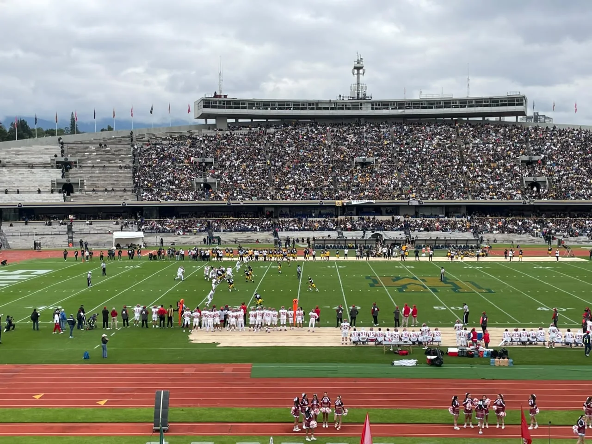
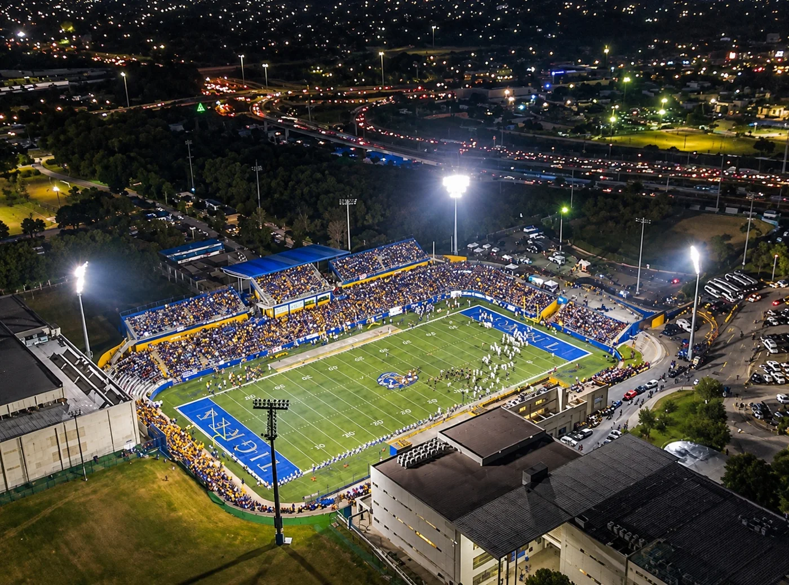
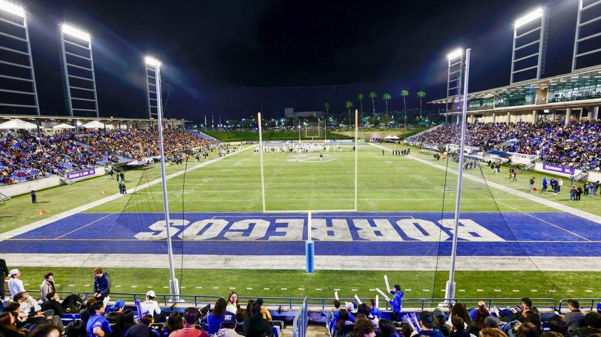
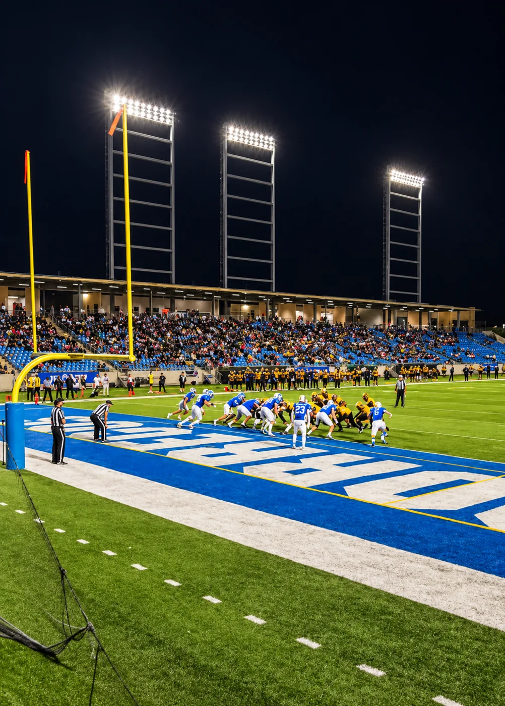
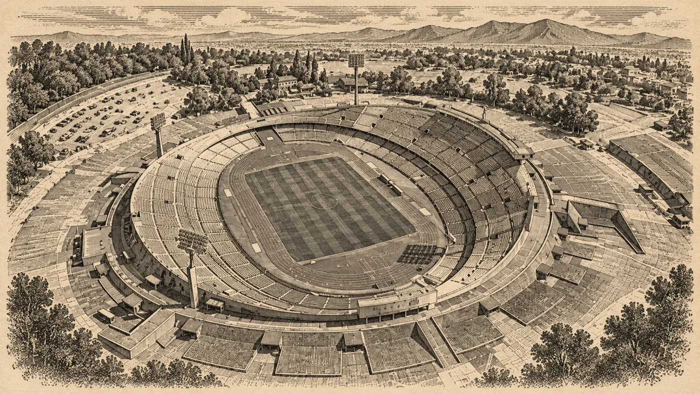
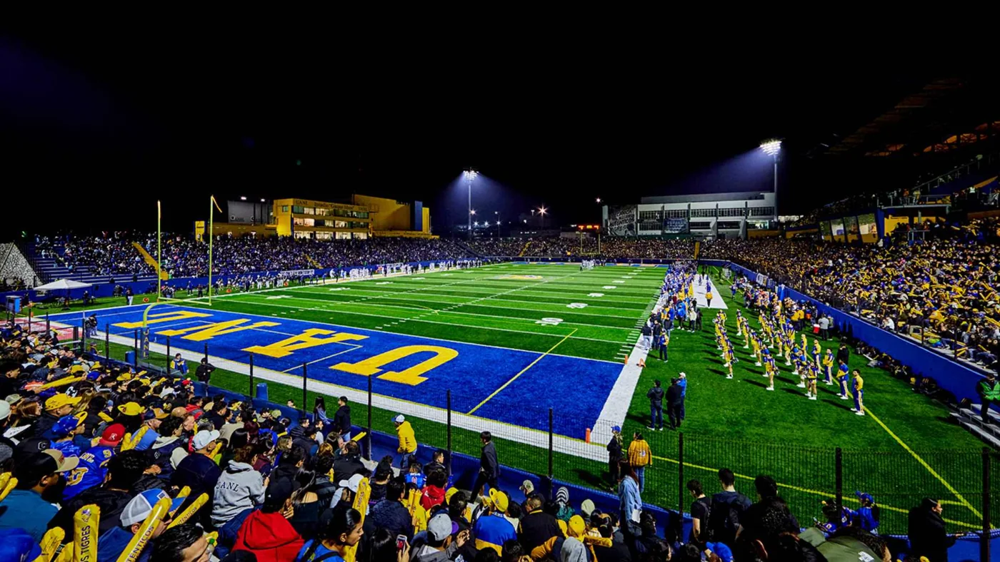
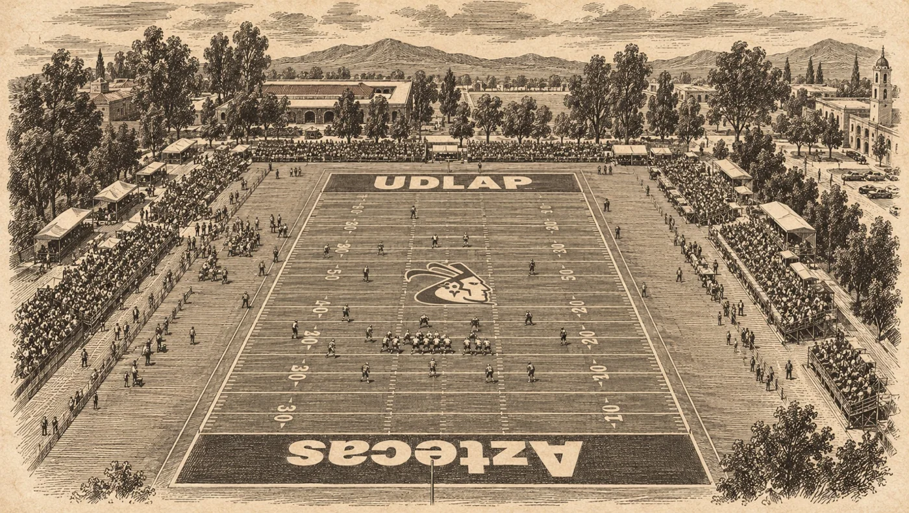
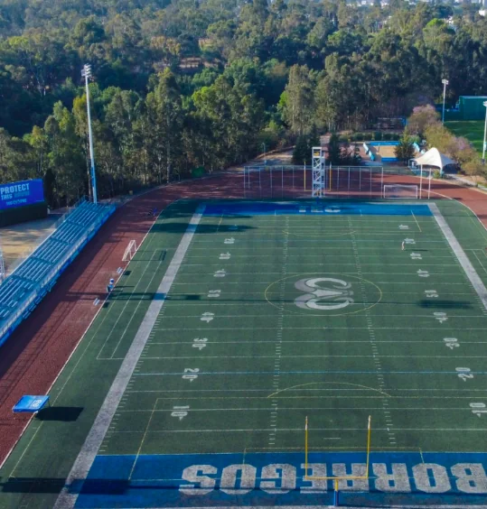

En el fútbol americano universitario mexicano, terminar como líder de la clasificación general representa mucho más que una buena temporada: significa tener la oportunidad de disputar la gran final frente a tu afición, en tu estadio y con la ventaja de jugar en casa. Sin embargo, ¿qué pasaría si la ONEFA explorara un modelo diferente?
Disputar las finales de sus dos conferencias en estadios neutrales, seleccionados antes de conocer a los finalistas, podría representar una oportunidad para llevar el fútbol americano universitario a un nuevo nivel.
La propuesta no está exenta de controversia. Implicaría modificar una de las recompensas más importantes de la temporada regular, pero también permitiría aprovechar escenarios de mayor capacidad, atraer nuevas audiencias y convertir el partido por el campeonato en un evento deportivo de mayor alcance.

Una pregunta que abre el debate: ¿una final estilo tazón colegial?
La conversación cobra relevancia a partir de una reflexión compartida en X por Sebastián Moreno, @sebasfootball:
“¿Respondería el público a una Final estilo Tazón Colegial?”— Sebastián Moreno, @sebasfootball en X
La pregunta plantea un escenario interesante: que el campeonato deje de depender exclusivamente de la localía del mejor clasificado y se convierta en una cita anual para aficionados de diferentes universidades, incluso cuando sus equipos no disputen el título.
Un modelo inspirado en los grandes eventos del fútbol americano colegial estadounidense, pero adaptado a la realidad económica, deportiva y cultural de México.


El Olímpico Universitario: un gigante que espera otra final
Inaugurado en 1952, el Estadio Olímpico Universitario de la UNAM es uno de los recintos más emblemáticos del deporte mexicano y un escenario histórico para el fútbol americano estudiantil.
Con una capacidad nominal aproximada de 72,000 espectadores, es el estadio universitario más grande entre los recintos considerados en esta comparación. Su infraestructura y relevancia histórica lo convierten en un candidato natural para explorar una final de ONEFA en sede neutral.
Y existe un dato que hace todavía más interesante la propuesta: casi una década sin una final de Liga Mayor de ONEFA en el Olímpico Universitario.
Desde la victoria de Pumas CU sobre Auténticos Tigres en 2017, el recinto no ha vuelto a ser escenario de una final de Liga Mayor de la organización.
Imaginar un campeonato entre Borregos Monterrey y Auténticos Tigres (Quienes han disputado las últimas 4 finales de los 14 grandes el cual por si mismo es un tema que abordaremos en otra ocasión), o entre dos instituciones de otras ciudades, disputado en Ciudad Universitaria abriría una pregunta importante: ¿sería capaz el fútbol americano universitario de convocar a miles de aficionados sin depender de la presencia del equipo local?
La respuesta no es automática, pero precisamente ahí se encuentra el potencial de experimentar con un formato distinto.
Estadios universitarios: una oportunidad que va más allá de Ciudad Universitaria
Aunque el Olímpico Universitario sería uno de los principales candidatos, México cuenta con otros recintos que podrían participar en un sistema de sedes rotativas.
Ranking orientativo de estadios universitarios por capacidad
| Estadio | Equipo | Capacidad aprox. |
|---|---|---|
| Olímpico Universitario | Pumas CU | 72,000 |
| Olímpico José Reyes Baeza | Águilas UACH | 22,000 |
| Gaspar Mass | Auténticos Tigres | 16,000 |
| Wilfrido Massieu | Águilas Blancas | 13,000 |
| Banorte, Tec de Monterrey | Borregos Monterrey | 10,057 |
| Corral de Plástico | Borregos CEM | 6,000 |
| Fortaleza Azul | Borregos Guadalajara | 3,500–5,000 |
| Templo del Dolor | Aztecas UDLAP | 4,500 |
| Cráter Azul | Borregos Puebla | 3,000 |
Capacidades aproximadas proporcionadas como referencia, no verificadas individualmente ni equivalentes al aforo autorizado. El orden de los recintos más pequeños puede variar.
La diferencia de infraestructura es considerable. Mientras algunos equipos disputan sus encuentros en estadios para aproximadamente 3,000 o 5,000 espectadores, otros cuentan con escenarios capaces de recibir a decenas de miles.
Una final entre dos universidades con estadios relativamente pequeños podría celebrarse en un recinto de mayor capacidad, siempre que existiera una demanda real de boletos.
Sin embargo, un estadio más grande no garantiza una mejor entrada. El éxito dependería de la convocatoria, la ubicación, el costo de los boletos y la capacidad de la ONEFA para comercializar el campeonato como un espectáculo atractivo incluso para los aficionados neutrales.

El impacto económico: una final que beneficie a toda una ciudad
Uno de los argumentos más importantes a favor de una sede neutral sería la posibilidad de convertir la final en un evento de turismo deportivo.
Una ciudad anfitriona podría beneficiarse de la llegada de aficionados, familiares de jugadores, exalumnos, medios de comunicación y comunidades universitarias de diferentes regiones.
Hoteles, restaurantes, transporte y comercios tendrían la oportunidad de participar en la actividad económica generada alrededor del encuentro.
Además, anunciar la sede con varios meses de anticipación permitiría organizar actividades complementarias: encuentros de exalumnos, experiencias para aficionados, clínicas deportivas, activaciones de patrocinadores y eventos universitarios.
En lugar de limitarse a las tres horas de un partido, la final podría convertirse en un fin de semana dedicado al fútbol americano universitario mexicano.
No obstante, este impacto sería potencial, no garantizado. Para justificar una sede neutral sería necesario estudiar los costos de operación, los desplazamientos y la demanda de espectadores.
El principal obstáculo: ¿qué pasaría con la ventaja del primer lugar?
La propuesta también presenta una desventaja deportiva importante.
Actualmente, la posibilidad de recibir una final en casa representa un incentivo fundamental para los equipos que buscan terminar en los primeros lugares de la clasificación.
Eliminar esa recompensa podría restarle peso a la temporada regular, especialmente durante las últimas jornadas, cuando cada victoria puede determinar quién tendrá la localía en un eventual campeonato.
Para los equipos que construyen su fortaleza alrededor de su afición, disputar una final lejos de casa también podría significar perder una ventaja competitiva legítimamente ganada.
Por ello, un cambio de formato tendría que conservar incentivos importantes para los mejores clasificados, como mantener la localía durante las semifinales y establecer criterios deportivos claros para la postemporada.
La discusión no consiste únicamente en encontrar el estadio más grande, sino en equilibrar el mérito deportivo con las oportunidades de crecimiento comercial y de audiencia.
¿Cómo podría funcionar una final de ONEFA en sede neutral?
Una alternativa sería implementar un programa piloto en el que la ONEFA seleccionara, antes del inicio de la temporada, una sede para cada una de sus dos finales de conferencia.
La organización podría considerar la infraestructura, la conectividad, los costos de traslado, el respaldo de las universidades anfitrionas y el potencial de asistencia.

El Olímpico Universitario podría ser la sede de una final con proyección nacional, aprovechando su historia y capacidad.

Una sede con fuerte tradición de fútbol americano universitario y una afición consolidada.


Puebla · 📸 @tecvenues
El modelo también podría contemplar sedes rotativas para evitar que una misma universidad o ciudad concentre permanentemente los beneficios de organizar el campeonato.
Después de una primera edición, la liga tendría información concreta sobre asistencia, ingresos, audiencia, satisfacción de los aficionados y costos operativos para determinar si vale la pena continuar.
¿Está preparado México para una final estilo College Bowl?
La historia demuestra que el fútbol americano universitario mexicano tiene capacidad para convocar a grandes audiencias.
En 2017, más de 25,000 aficionados asistieron al Olímpico Universitario para presenciar la victoria de Pumas CU por 18-15 sobre Auténticos Tigres, de acuerdo con la Gaceta UNAM.
Sin embargo, aquel encuentro también contó con la presencia del equipo local. El verdadero reto de una final neutral sería conseguir que aficionados de diferentes instituciones compraran boletos por el atractivo del campeonato, independientemente de los equipos participantes.
Es ahí donde la ONEFA tendría que construir una identidad propia alrededor del evento: una final que no pertenezca exclusivamente a dos universidades, sino que represente una celebración de todo el fútbol americano estudiantil.
Una idea que merece entrar a la conversación
El fútbol americano universitario mexicano tiene tradición, rivalidades históricas, talento y escenarios importantes. La pregunta es si puede aprovechar esos elementos para construir un espectáculo de mayor alcance.
Una final en campo neutral no necesariamente sería mejor que el formato actual, pero explorarla permitiría discutir nuevas oportunidades para atraer patrocinadores, incrementar la exposición mediática y llevar el campeonato a públicos diferentes.
Quizá el primer paso no sea cambiar definitivamente el sistema, sino estudiar la viabilidad de una edición piloto que permita medir sus resultados sin comprometer el futuro de la competencia.
Porque más allá de decidir dónde se entrega el trofeo, la discusión de fondo es otra:
¿Puede la ONEFA convertir sus finales en eventos capaces de llenar estadios sin importar quiénes sean los protagonistas?
Esa es una pregunta que vale la pena plantear.